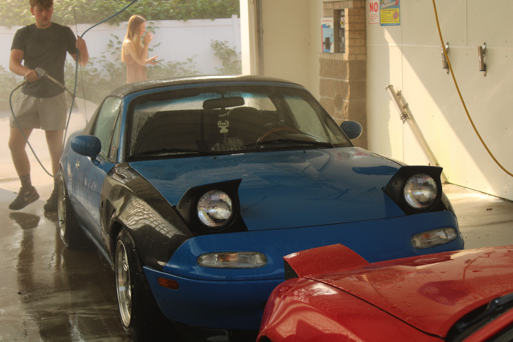

My Experience with Cars
2011 Kia Forte Koup SX

This car was my first car, and is my daily driver to this day. I got it in February of 2022 with 84.5k miles on it, and it currently has about 109k. The car has a 6-speed manual transmission and has been very reliable. I love the car for what it is, a small, very efficient, but Fun car, that can comfortably and quietly get me to where I need to go. I have lots of future plans for this car, including wheels, lowering springs/coilovers, lips and side skirts, clear tail lights, trunk lid debadge and wrap, and much more. I will most likely own this car long after I graduate, so I have nothing but time to decide where to take this car.
2003 Infiniti G35 Coupe

This car had an interesting history with me. I got it in June of the same year, because I wanted to get something faster and more of a "sports car". I loved the way the G35's looked, and this one was a great deal. I picked it up for $2,500, running and driving, clean title with 90k original miles. We were able to drive the car home, however, there were very obvious issues with the car. I had an exhaust leak, 3rd gear grind, and ran extremely rich, by the time we got it home, we couldn't get the car to idle properly, it would just die. I drove 11.5 hours to grab a new CD009 transmission, and we installed it with no issues. All gears worked no problem. As for the exhaust leak, I ordered a new Y-Pipe which fixed the problem, but we were unable to figure out the huge misfire and engine problem. I ended up trading the car for my next car, the 1990 Miata. The issue was the fuel pump, which was next on our list to check, unfortunately.
1990 Mazda Miata
This car is a strong contender for my favorite, simply because I drove it much more than any of the others, excluding the Kia, of course. I put probably 6,000 or so miles on this car over the time I owned it. It was very clean, and ran great, even though it had 200k miles when I got it. The car looked really poor when I got it, and me and my brother gave it a ton of love, and brought it back. I got a new front bumper with the lip, I got the nice wheels on it with brand new tires, and swapped out the 1.6 welded differential for a 1.8 Torsen LSD, which go for a little under $1,000. I loved everything about this car, and I still really miss it, even though my more recent cars are much better cars overall. Me missing this car is part of why I decided to buy my latest car, which you will read about soon. The only reason I got rid of this car was to get money for the next one. I sold the hardtop for $2,700, and the car for $4,800. I could have gotten more if I had it posted for longer, but I was in a hurry to sell it to buy the next one before it sold to someone else.
2002 Mazda Miata

This is absolutely without a doubt the coolest car I've owned. It has a fully built engine from a famous miata engine shop, a turbo kit, and really high-quality/expensive supporting mods. It makes 300 wheel horsepower on 17 pounds of boost. It's very reliable and very fast. The body is in good shape, and is very clean for the miles. The odometer reads 180k miles, and the engine has about 3,000 miles. It shoots big fireballs, and is a monster on twisty roads. I planned to take it to Watkins Glen Raceway, but I ran out of time for the season. I still own this car currently, and I truly love it. However, I was looking for another first generation miata that has the pop-up headlights.
1992 Mazda Miata

Finally, my most recent purchase - a 1992 Miata. This car came up shortly into my search for another NA Miata, and was priced very well for what it is. The car has a built engine and turbo kit, similar to my NB, but with a lot less documentation and quality. I don't know a whole lot about the car yet, I only just bought it, pretty much on a whim. However, the car easily made a 6 hour drive home without any issues. It leaks oil, and I believe also burns some, hopefully from the turbo seals. The turbo is cheap, and the engine build is only supposed to have 6,000 miles on it, so I would be impressed if the rings or something else was already failing. (Fingers Crossed) Regardless, it makes noticeably less power than my NB, about 260 to the wheels. It's still very fast, and has pretty much everything I've wanted in another NA. The 5-speed, blue paint, gauges, a turbo kit, and a clean body. I am excited to see where this car goes!